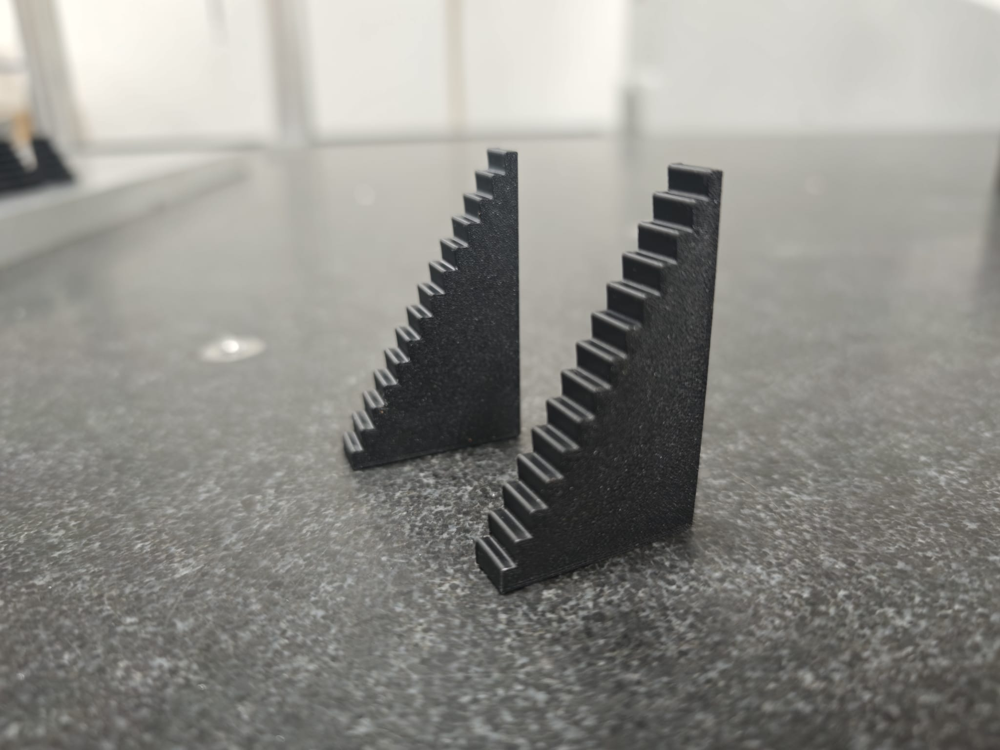

Standard product · supplied as a pair
Request a quote
65 mm Stepped Height Adjuster
Mid-height stepped support for fixture support, setup adjustment and inspection work.

Pair price£7.00ABS stepped height adjusters, supplied as a pair. Custom geometry available on request.
Request this size
What it is for
A simple stepped support for quick packing, setup height adjustment and repeatable fixture support.
Height
65 mm overall height with selectable 10 mm, 20 mm and 30 mm widths.
Material
3D printed ABS. Best used as a practical setup aid rather than a calibrated gauge block.
Typical uses
- General setup support
- Fixture packing and adjustment
- Inspection setup aids
- Bench and workshop support jobs
Options
- 10 mm width - £7.00 per pair
- 20 mm width - £8.00 per pair
- 30 mm width - £9.00 per pair
- Custom sizes and geometry available on request